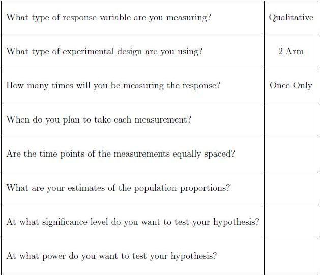

Suppose instead of disease prevention, Jill was interested in a different experiment. Jill is interested in whether or not a stimuli causes a particular behavioural response in mice. Each mouse will be subjected to the stimuli several times and each time Jill will record whether or not the response occurs. Thus this is a repeated measures experiment.
The sample size formula for this type of design is much more complicated than if she were to measure the response once, hence it is our recommendation that Jill schedule a consultation with a statistician. Some things that Jill should think about and some information that she will need prior to her consultation are provided in the following checklist.

-- ErinEsp - 13 Mar 2010